Sculptures
STREET SCENES
CANAL ST.
CROSS-SECTION
CROSS-SECTION
.jpg)
CANAL ST. CROSS-SECTION (2010)
I wanted to build a piece that resembled a core sample of a city street. As though you took a street, dug it up, and lifted it straight off the earth. "Canal St. Cross-Section" is a combination of five major pieces built into one box. There's a street scene on the top with a subway entrance on the corner.
KATZ'S DELI
KATZ'S DELI (2012)
Katz’s Delicatessen is one of those legendary New York locations. It’s been in business on the lower east side of Manhattan since 1888, and is New York’s oldest deli. Telling someone to “meet me at Katz’s..,” is almost the same as telling them to meet you under the clock in Grand Central - everyone knows where it is.
PARADISE-PLAYHOUSE
PARADISE-PLAYHOUSE (2014)
I designed this Times Square environment using details from two different locations. The view into the interior takes you through the rows of x-rated magazines and videos and past the display walls of sex toys and marital aids. In the back of the shop you can see the entrance to the Video Arcade.
STRAND CINEMA
STRAND CINEMA (2013)
The Strand is a fictitious theater based on details from a few different locations. If you look carefully, you can see where the person changing the marquee accidently dropped (and broke) a couple letters from the top of the ladder. The lighting in the marquee is a combination of LEDs and fiber optics.
HOPP'S LUNCHEONETTE
HOPP'S LUNCHEONETTE (2008)
I designed Hopp's Luncheonette shortly after I finished building PeepWorld. After working on the Times Squaresque environment for a year and a half, I was looking for a ‘kinder, gentler’ subject matter to involve myself with. I decided I wanted something that reminded me of growing up on the streets of Brooklyn, in a much different era.
NON-STOP ACTION
NON-STOP ACTION (1990)
The exterior of the porno place in Non-Stop Action is loosely based on one of those establishments that used to exist on Times Square before it was made more "family/tourist-friendly."
CASBAH CLUB
CASBAH CLUB (2008)
This Casbash Club doesn’t actually exist anywhere. The inspiration for the club’s architecture was gotten from an old photo of an adult bookstore in Los Angeles. There are flashing lights and changing colors that are visible in the small window on the entrance door.
FOLLIES BURLESK
FOLLIES BURLESK (1987)
The inspiration for this piece came from an old picture I found of the Times Square area. The original Follies Burlesk stood on the corner of 46th Street and Broadway. It was above a Howard Johnsons' Restaurant, and had the design and look of something right out of the 1950s.
TUBE BAR
TUBE BAR(1992)
I used to pass by Tube Bar all the time when I lived in Jersey City. The beautiful façade, with the over-sized round window and art deco styling was reminiscent of a 'gin-mill' from a bygone era.
RIALTO CINEMA
RIALTO CINEMA(1999)
I decided to use "Clockwork Orange" on the marquee as homage to Stanley Kubrick, one of my favorite film directors. After staying up all night to finish the piece, I awoke the next day to the news that Kubrick had died suddenly the night before
ST. GEORGE HOTEL
ST. GEORGE HOTEL(1994)
I think the interior of ST. GEORGE HOTEL is a testimonial to the joys of bachelorhood. Observe the fine cuisine and the portraits of the tenant's many girlfriends.
VILLAGE CIGARS
VILLAGE CIGARS(1985)
My sculptures are seldom an exact representation of an existing location. Usually, they are either totally from my imagination, or a combination of details from many different environments.
WILD GIRLS
WILD GIRLS(1995)
This fictional Times Square-esque environment is loosely designed after some of the elements of the 1987 Follies Burlesk piece.
LUCKY SEVENS CASINO
LUCKY SEVENS CASINO(1988)
To date, LUCKY SEVENS CASINO is the largest, most technically intricate piece I've done. I built it before the Las Vegas strip was turned into a theme park, so it was modeled after the older gambling establishments — they had that ostentatious Vegas feel to them, but with less extravaganza. It was before the days of 'Dancing Waters' and laser light shows.
TIMES SQUARE HOTEL ROOM
TIMES SQUARE HOTEL ROOM(1982)
In order to formulate the narrative element of the work, I try to envision the person who would occupy that environment and what they would be doing there. I saw this hotel room as home to a struggling, yet determined writer. He spends his days banging away on his portable Olivetti while chain-smoking Marlboros and eating junk food.
HOTEL HALLWAY
HOTEL HALLWAY(1995)
A small piece with a partial view into the room.
OCCUPIED HOTEL ROOM
OCCUPIED HOTEL ROOM(1979)
Occupied Hotel Room was finished in 1979, and was the second piece I ever built. The first was a subway car interior that was more in the style of an architectural model. With the hotel room, I decided to include more detail to make it more realistic, and interject a narrative element. All the work I have done since has had a narrative component.
STREET CORNER #1
STREET CORNER #1(1998)
Part of an ongoing series of street corner environments.
BROOKLYN ROOFTOP
BROOKLYN ROOFTOP(2005)
Brooklyn Rooftopis a piece that was in my head for years before I finally sat down to build it.
STREET CORNER #2
STREET CORNER #2(2000)
Part of an ongoing series of street corner environments.
NEW YORK'S BEST PIZZA
NEW YORK'S BEST PIZZA(2001)
Part of an ongoing series depicting a vanishing breed — the phone booth.
PHONE BOOTH
PHONE BOOTH(1983)
TOWER OF PIZZA
TOWER OF PIZZA(1985)
This piece is comprised of details from several different locations, some real and some imagined.
AAA DETECTIVE AGENCY
AAA DETECTIVE AGENCY(1986)
AAA DETECTIVE AGENCY is my homage to film noir movies, and the Sam Spade type of Private Eye.
PEEPLAND
PEEPLAND(1983)
Peepland shows a fictitious section of Times Square real estate. It has almost everything you need, all in a row. The sleazy porno shop is surrounded by the sleazy hotel on the one side, and the sleazy movie theater on the other. Probably the only thing missing would be a sleazy bar. For you motorcycle enthusiasts—you’ll be happy to know that there are continuous showings of the widely acclaimed classic film “Hot Biker Girls.”
HOTEL CAVALIER
HOTEL CAVALIER(1984)
An actual hotel located on 34th Street inspires the entrance to the HOTEL CAVALIER. This one, however, is somewhat seedier than the original.
NEW YORK ARMY-NAVY
NEW YORK ARMY-NAVY(1991)
Part of an ongoing series depicting a vanishing breed — the phone booth.
PLAYBOY BILLIARDS
PLAYBOY BILLIARDS (1986)
Playboy Billiards is a composite of details I remembered from some neighborhood 'Billiard Parlors' in Brooklyn.
HUDSON HOTEL
HUDSON HOTEL(1984)
The entrance to the Hudson Hotel is roughly modeled after a flophouse I saw on the Bowery. The street corner portrayed in the piece is fictitious. There is a complete view into the lobby of the seedy hotel, as well as partial views into the theater lobby and subway entrance.
DINERS & FEATURES
LOR-AL DINER
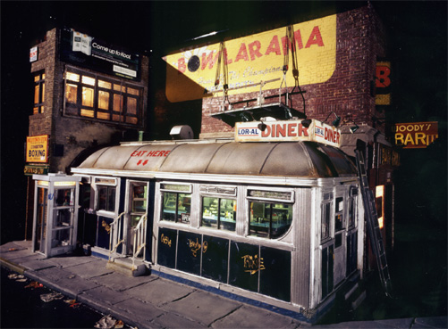
LOR-AL DINER(1987)
Lor-al Diner is modeled after the Corfu Diner, located in the Chelsea section of Manhattan.
MISS AMERICA DINER
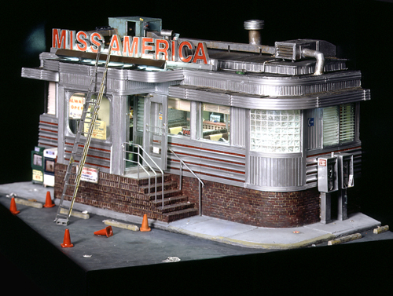
MISS AMERICA DINER(2000)
The location of the Miss America Diner was a surprise. I would have expected to find it as a roadside attraction on a turnpike, or perhaps in an industrial area catering to the workers on their lunch hour. The classic 1942 stainless steel beauty is almost hidden away in a residential/commercial area of Jersey City.
TERMINAL DINER
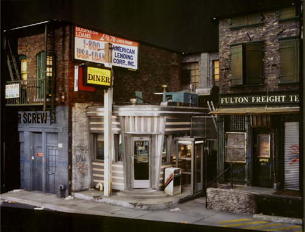
TERMINAL DINER(1990)
The Terminal Diner actually exists on the west side of Manhattan. The classically designed stainless steel eatery looks as though it was squeezed to get it into an alleyway between two buildings.
NATHAN'S CONEY ISLAND
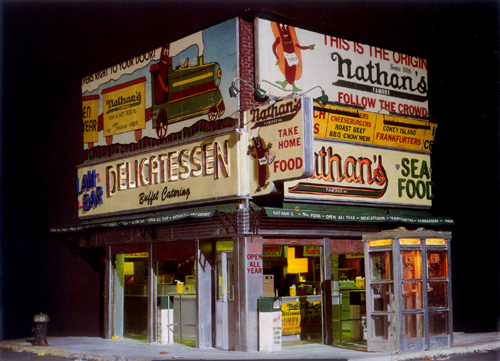
NATHAN'S CONEY ISLAND(1984)
Anyone who grew up in Brooklyn has visited Nathan's at Coney Island at least once—probably many times.
MIDTOWN DINER
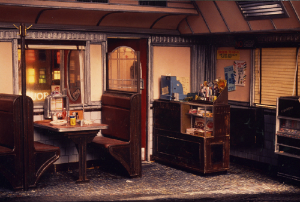
MIDTOWN DINER(1983)
Midtown Diner shows the interior view of a fictitious diner. The half eaten meal and the tip left on the table helps to tell the story of who just left.
MA'S HOME COOKING
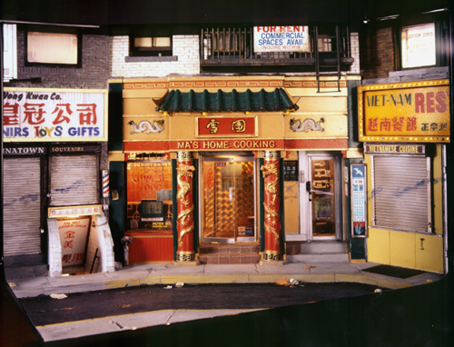
MA'S HOME COOKING(1991)
Ma's Home Cooking was modeled after an existing restaurant on Doyers Street in New York's Chinatown. Doyers is a small street, that's easy to miss if you're not looking for it. It only runs one block long, and makes a sharp 90 degree turn midway. The street has an interesting history. The tabloids used to refer to it as the "Bloody Angle" because of the tong wars that were fought there in the early 20th century.
METRO DINER
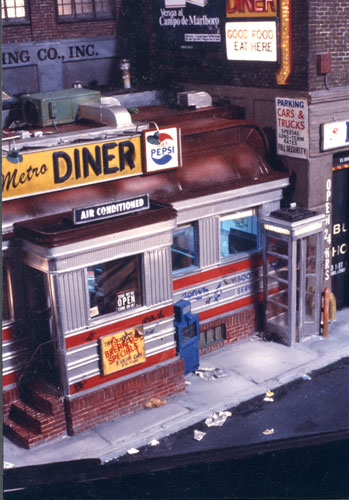
METRO DINER(1985)
BOULEVARD DRINKS #1
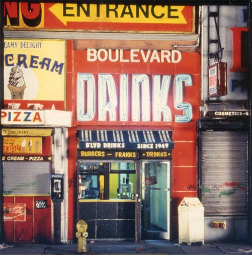
BOULEVARD DRINKS #1(1989)
Boulevard Drinks has been a landmark on Journal Square in Jersey City, NJ since 1949.
BOULEVARD DRINKS #2
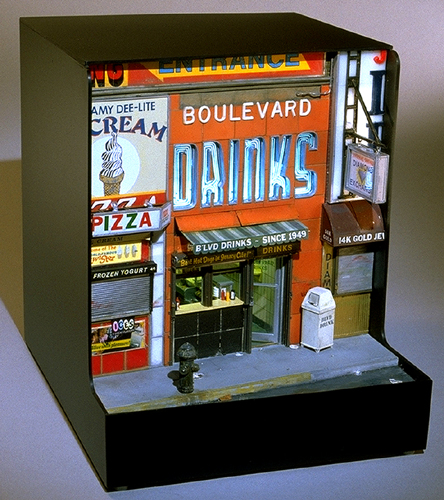
BOULEVARD DRINKS #2(2003)
This is the second version I did of Boulevard Drinks.
MOE'S LUNCHEONETTE
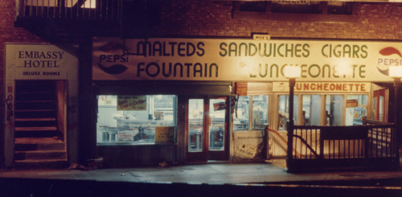
MOE'S LUNCHEONETTE(1982)
The inspiration for Moe's Luncheonette came from the street corner where many of the "Tunnel Bunnies" used to congregate late at night. Not far from the entrance of the Lincoln Tunnel, it was good location to attract the commuter clientele.
WHITE TOWER HAMBURGERS
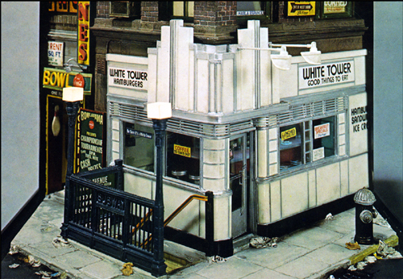
WHITE TOWER HAMBURGERS(1984)
Long before Americans had McDonalds, there was the White Tower chain. These beautiful art deco restaurants dotted the eastern half of the US from the mid 1920s up until the early 70s. It is probably debatable whether they were better known for their architectural style or for the price of their burgers — a nickel!
KATZ'S DELI
KATZ'S DELI(2012)
Katz’s Delicatessen is one of those legendary New York locations. It’s been in business on the lower east side of Manhattan since 1888, and is New York’s oldest deli. Telling someone to “meet me at Katz’s..,” is almost the same as telling them to meet you under the clock in Grand Central - everyone knows where it is.
SUBWAY SCENES
SUBWAY AT BLEECKER ST.
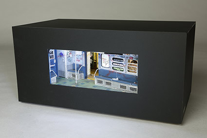
SUBWAY AT BLEECKER ST.(2013)
This subway diorama gives you a point of view from the interior of the car. Looking off to the left you can see a partial view into the next car. The view through the door and windows puts you on the Bleecker St. station — in the heart of Greenwich Village. The sign on the station wall is a replica of the original ceramic sign which has been there since the IRT subway line opened in 1904. Thankfully, the sign has been preserved by having it declared as a New York City Landmark.
CANAL ST. CROSS-SECTION
CANAL ST. CROSS-SECTION(2010)
I wanted to build a piece that resembled a core sample of a city street. As though you took a street, dug it up, and lifted it straight off the earth. "Canal St. Cross-Section" is a combination of five major pieces built into one box. There's a street scene on the top with a subway entrance on the corner. Looking down into the subway entrance, you are led to the two subterranean levels of the piece, both of which have intersecting cross views visible through the small windows on the sides of the piece.
BROOKLYN BRIDGE STATION
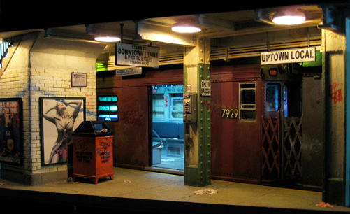
BROOKLYN BRIDGE STATION(2008)
One of the old IRT “Redbird” cars waiting to load up and move out of the BROOKLYN BRIDGE STATION. Mirrors were carefully positioned on both ends of the subway cars to give the illusion of there being more train than there actually is.
SUBWAY MAQUETTE SERIES
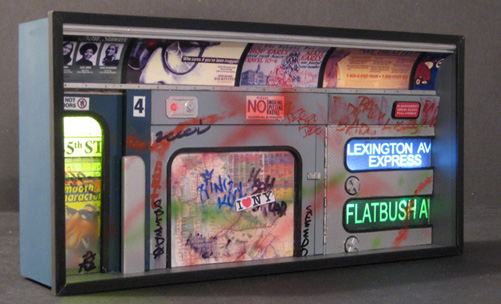
SUBWAY MAQUETTE SERIES
An ongoing series of very small subway environments. Each piece measures 4 5/8 x 9 1/4 x 2 inches. They can either be hung on the wall or placed on a tabletop. The lighting is achieved with LEDs, and can be powered with either a 9 volt battery or a plugin wall transformer.
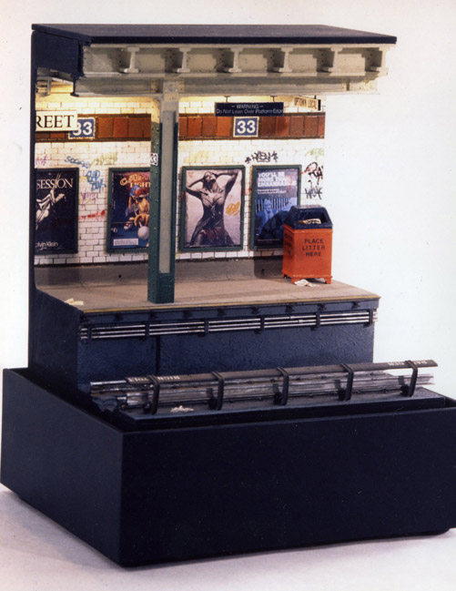
SUBWAY PLATFORM SERIES
SUBWAY ENTRANCE SERIES
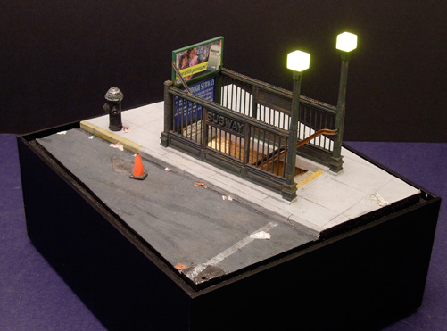
SUBWAY ENTRANCE SERIES
I have built several different Subway Entrance pieces over the years. They are all practically identical except for the detailing. The signage, graffiti, and litter differs in each one.
MR. LUCKY
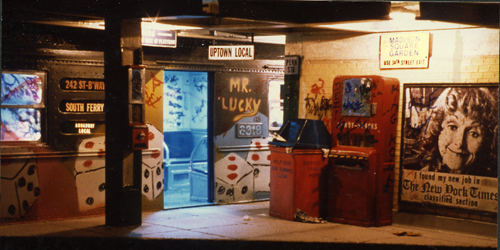
MR. LUCKY(1982)
New York City was practically covered with graffiti during the 1980s. The subway system was a favorite venue for the graffiti artists. Very often entire trains were covered with intricately detailed spray painted murals — very often they were just a mess of scribbles and 'tags.'
TO ATLANTIC AVENUE
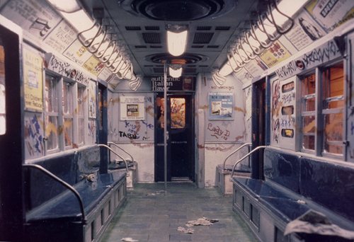
TO ATLANTIC AVENUE(1982)
This head-on view through a subway train was built into a box that had a small window in its front side.
CANAL & BROADWAY
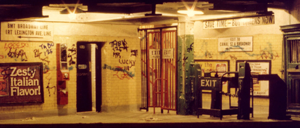
CANAL & BROADWAY(1982)
CANAL & BROADWAY is one of my early pieces showing the turnstile/token booth area of the Canal Street station.
.
SUBWAY #1
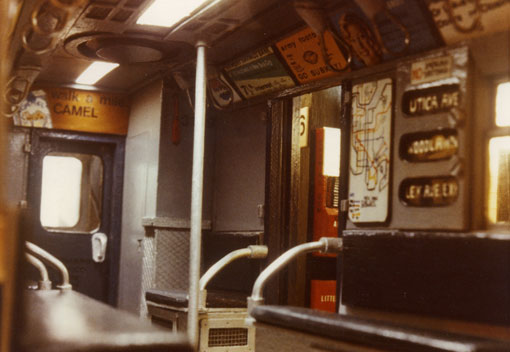
SUBWAY #1(1978)
This was the first urban miniature I ever built.
TRUE LOVE BROOKYLN
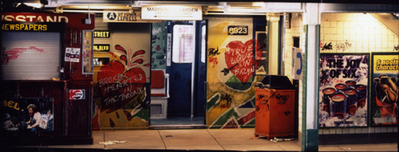
TRUE LOVE BROOKYLN(1990)
Another subway environment with an original graffiti mural.
PENNSYLVANIA AVE. ELAVATED
PENNSYLVANIA AVE. ELAVATED(1995)
This piece was modeled after the elevated subway station I used to get off at to attend Thomas Jefferson High School in Brooklyn.
.
OTHER ENVIROMENTS
PARADISE MOTEL
PARADISE MOTEL(1989)
Shortly after PARADISE MOTEL was included in a gallery show in New York I received an audiocassette in the mail. It was from a country-western singer/songwriter who had seen the show. He wrote a song entitled "Good Luck Wanda and Earl" and it was his vision of how their marriage was working out. According to him, they went through some rocky times, but were still together. It was nice to see how Wanda and Earl were doing in another art form.
FLAMINGO MOTOR COURT
FLAMINGO MOTOR COURT(1984)
This roadside motel is one of my departures from the mean streets. As far as I know, it doesn't actually exist anywhere. I designed it based on the Tropical Deco style of architecture so prevalent in South Florida.
LABREA GASLAND
LABREA GASLAND(1997)
This piece is a tribute to life in Los Angeles. Your point of view is that of sitting in the driver's seat at a gas station.
LOR-AL DINER
LOR-AL DINER(1987)
Lor-al Diner is modeled after the Corfu Diner, located in the Chelsea section of Manhattan.
MISS AMERICA DINER
MISS AMERICA DINER(2000)
The location of the Miss America Diner was a surprise. I would have expected to find it as a roadside attraction on a turnpike, or perhaps in an industrial area catering to the workers on their lunch hour. The classic 1942 stainless steel beauty is almost hidden away in a residential/commercial area of Jersey City.
TERMINAL DINER
TERMINAL DINER(1990)
The Terminal Diner actually exists on the west side of Manhattan. The classically designed stainless steel eatery looks as though it was squeezed to get it into an alleyway between two buildings.
NATHAN'S CONEY ISLAND
NATHAN'S CONEY ISLAND(1984)
Anyone who grew up in Brooklyn has visited Nathan's at Coney Island at least once—probably many times.
MIDTOWN DINER
MIDTOWN DINER(1983)
Midtown Diner shows the interior view of a fictitious diner. The half eaten meal and the tip left on the table helps to tell the story of who just left.
MA'S HOME COOKING
MA'S HOME COOKING(1991)
Ma's Home Cooking was modeled after an existing restaurant on Doyers Street in New York's Chinatown. Doyers is a small street, that's easy to miss if you're not looking for it. It only runs one block long, and makes a sharp 90 degree turn midway. The street has an interesting history. The tabloids used to refer to it as the "Bloody Angle" because of the tong wars that were fought there in the early 20th century.
METRO DINER
METRO DINER(1985)
BOULEVARD DRINKS #1
BOULEVARD DRINKS #1(1989)
Boulevard Drinks has been a landmark on Journal Square in Jersey City, NJ since 1949.
BOULEVARD DRINKS #2
BOULEVARD DRINKS #2(2003)
This is the second version I did of Boulevard Drinks.
MOE'S LUNCHEONETTE
MOE'S LUNCHEONETTE(1982)
The inspiration for Moe's Luncheonette came from the street corner where many of the "Tunnel Bunnies" used to congregate late at night. Not far from the entrance of the Lincoln Tunnel, it was good location to attract the commuter clientele.
WHITE TOWER HAMBURGERS
WHITE TOWER HAMBURGERS(1984)
Long before Americans had McDonalds, there was the White Tower chain. These beautiful art deco restaurants dotted the eastern half of the US from the mid 1920s up until the early 70s. It is probably debatable whether they were better known for their architectural style or for the price of their burgers — a nickel!
KATZ'S DELI
KATZ'S DELI(2012)
Katz’s Delicatessen is one of those legendary New York locations. It’s been in business on the lower east side of Manhattan since 1888, and is New York’s oldest deli. Telling someone to “meet me at Katz’s..,” is almost the same as telling them to meet you under the clock in Grand Central - everyone knows where it is.
SUBWAY AT BLEECKER ST.
SUBWAY AT BLEECKER ST.(2013)
This subway diorama gives you a point of view from the interior of the car. Looking off to the left you can see a partial view into the next car. The view through the door and windows puts you on the Bleecker St. station — in the heart of Greenwich Village. The sign on the station wall is a replica of the original ceramic sign which has been there since the IRT subway line opened in 1904. Thankfully, the sign has been preserved by having it declared as a New York City Landmark.
CANAL ST. CROSS-SECTION
CANAL ST. CROSS-SECTION(2010)
I wanted to build a piece that resembled a core sample of a city street. As though you took a street, dug it up, and lifted it straight off the earth. "Canal St. Cross-Section" is a combination of five major pieces built into one box. There's a street scene on the top with a subway entrance on the corner. Looking down into the subway entrance, you are led to the two subterranean levels of the piece, both of which have intersecting cross views visible through the small windows on the sides of the piece.
BROOKLYN BRIDGE STATION
BROOKLYN BRIDGE STATION(2008)
One of the old IRT “Redbird” cars waiting to load up and move out of the BROOKLYN BRIDGE STATION. Mirrors were carefully positioned on both ends of the subway cars to give the illusion of there being more train than there actually is.
SUBWAY MAQUETTE SERIES
SUBWAY MAQUETTE SERIES
An ongoing series of very small subway environments. Each piece measures 4 5/8 x 9 1/4 x 2 inches. They can either be hung on the wall or placed on a tabletop. The lighting is achieved with LEDs, and can be powered with either a 9 volt battery or a plugin wall transformer.
SUBWAY PLATFORM SERIES
SUBWAY ENTRANCE SERIES
SUBWAY ENTRANCE SERIES
I have built several different Subway Entrance pieces over the years. They are all practically identical except for the detailing. The signage, graffiti, and litter differs in each one.
MR. LUCKY
MR. LUCKY(1982)
New York City was practically covered with graffiti during the 1980s. The subway system was a favorite venue for the graffiti artists. Very often entire trains were covered with intricately detailed spray painted murals — very often they were just a mess of scribbles and 'tags.'
TO ATLANTIC AVENUE
TO ATLANTIC AVENUE(1982)
This head-on view through a subway train was built into a box that had a small window in its front side.
CANAL & BROADWAY
CANAL & BROADWAY(1982)
CANAL & BROADWAY is one of my early pieces showing the turnstile/token booth area of the Canal Street station.
.
SUBWAY #1
SUBWAY #1(1978)
This was the first urban miniature I ever built.
TRUE LOVE BROOKYLN
TRUE LOVE BROOKYLN(1990)
Another subway environment with an original graffiti mural.
PENNSYLVANIA AVE. ELAVATED
PENNSYLVANIA AVE. ELAVATED(1995)
This piece was modeled after the elevated subway station I used to get off at to attend Thomas Jefferson High School in Brooklyn.
.
OTHER ENVIROMENTS
PARADISE MOTEL
PARADISE MOTEL(1989)
Shortly after PARADISE MOTEL was included in a gallery show in New York I received an audiocassette in the mail. It was from a country-western singer/songwriter who had seen the show. He wrote a song entitled "Good Luck Wanda and Earl" and it was his vision of how their marriage was working out. According to him, they went through some rocky times, but were still together. It was nice to see how Wanda and Earl were doing in another art form.
FLAMINGO MOTOR COURT
FLAMINGO MOTOR COURT(1984)
This roadside motel is one of my departures from the mean streets. As far as I know, it doesn't actually exist anywhere. I designed it based on the Tropical Deco style of architecture so prevalent in South Florida.
LABREA GASLAND
LABREA GASLAND(1997)
This piece is a tribute to life in Los Angeles. Your point of view is that of sitting in the driver's seat at a gas station.
PARADISE MOTEL
PARADISE MOTEL(1989)
Shortly after PARADISE MOTEL was included in a gallery show in New York I received an audiocassette in the mail. It was from a country-western singer/songwriter who had seen the show. He wrote a song entitled "Good Luck Wanda and Earl" and it was his vision of how their marriage was working out. According to him, they went through some rocky times, but were still together. It was nice to see how Wanda and Earl were doing in another art form.
FLAMINGO MOTOR COURT
FLAMINGO MOTOR COURT(1984)
This roadside motel is one of my departures from the mean streets. As far as I know, it doesn't actually exist anywhere. I designed it based on the Tropical Deco style of architecture so prevalent in South Florida.
LABREA GASLAND
LABREA GASLAND(1997)
This piece is a tribute to life in Los Angeles. Your point of view is that of sitting in the driver's seat at a gas station.